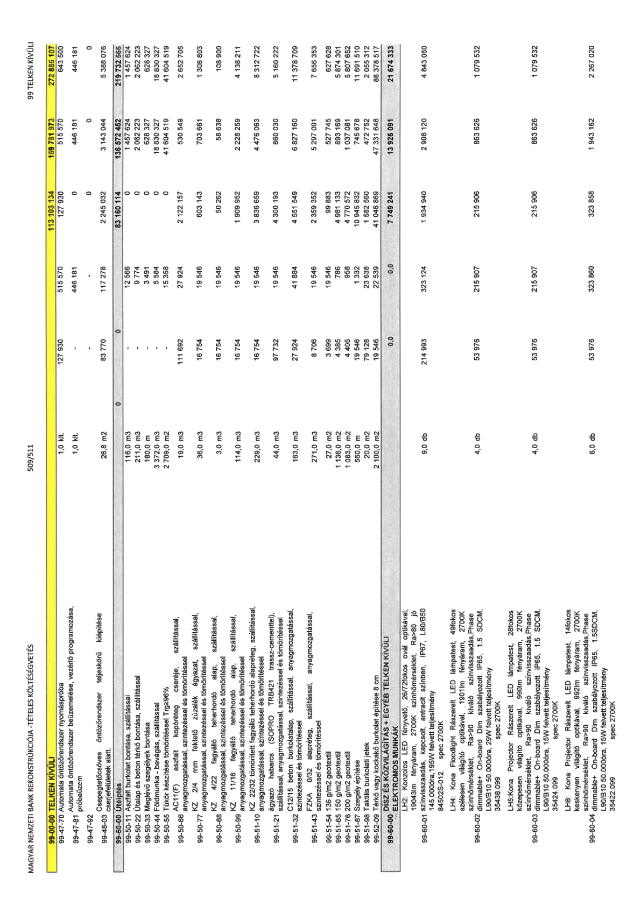

| Tétel | Menny. | Egys. | Anyag e.ár (net HUF) | Díj e.ár (net HUF) | Anyag összesen (net HUF) | Díj összesen (net HUF) | Anyag+Díj összesen (net HUF) |
|---|---|---|---|---|---|---|---|
| 99-47-70 Automata öntözőrendszer nyomáspróba | 1,0 | klt | 127 930 | 515 570 | 127 930 | 515 570 | 643 500 |
| 99-47-81 Automata öntözőrendszer beüzemelés | 1,0 | klt | 0 | 446 181 | 0 | 446 181 | 446 181 |
| 99-48-03 Csepegtetőcsöves öntözőrendszer | 26,8 | m2 | 83 770 | 117 278 | 2 245 032 | 3 143 044 | 5 388 076 |
| 99-50-00 Útépítés | NaN | NaN | 0 | 0 | 83 160 114 | 136 572 452 | 219 732 566 |
| 99-50-11 Aszfalt burkolat bontása | 116,0 | m3 | 0 | 12 566 | 0 | 1 457 624 | 1 457 624 |
| 99-50-22 Útalap és beton térkő bontása | 211,0 | m3 | 0 | 9 774 | 0 | 2 062 223 | 2 062 223 |
| 99-50-33 Meglévő szegélyek bontása | 180,0 | m | 0 | 3 491 | 0 | 628 327 | 628 327 |
| 99-50-44 Földmunka - bevágás | 3 372,0 | m3 | 0 | 5 584 | 0 | 18 830 327 | 18 830 327 |
| 99-50-55 Tükör készítése tömörítéssel | 2 709,0 | m2 | 0 | 15 358 | 0 | 41 604 519 | 41 604 519 |
| 99-50-66 AC11(F) aszfalt kopóréteg | 19,0 | m3 | 111 692 | 27 924 | 2 122 157 | 530 549 | 2 652 705 |
| 99-50-77 KZ 2/4 mm fektető zúzalék | 36,0 | m3 | 16 754 | 19 546 | 603 143 | 703 661 | 1 306 803 |
| 99-50-88 KZ 4/22 fagyálló teherhordó alap | 3,0 | m3 | 16 754 | 19 546 | 50 262 | 58 638 | 108 900 |
| 99-50-99 KZ 11/16 fagyálló teherhordó alap | 114,0 | m3 | 16 754 | 19 546 | 1 909 952 | 2 228 259 | 4 138 211 |
| 99-51-10 KZ 22/32 tömörített alapréteg | 229,0 | m3 | 16 754 | 19 546 | 3 836 659 | 4 476 063 | 8 312 722 |
| 99-51-21 ágyazó habarcs | 44,0 | m3 | 97 732 | 19 546 | 4 300 193 | 860 030 | 5 160 222 |
| 99-51-32 C12/15 beton burkolatalap | 163,0 | m3 | 27 924 | 41 884 | 4 551 549 | 6 827 160 | 11 378 709 |
| 99-51-43 FZKA 0/32 alapréteg | 271,0 | m3 | 8 706 | 19 546 | 2 359 352 | 5 297 001 | 7 656 353 |
| 99-51-54 136 g/m2 geotextil | 27,0 | m2 | 3 699 | 19 546 | 99 883 | 527 745 | 627 628 |
| 99-51-65 150 g/m2 geotextil | 1 136,0 | m2 | 4 385 | 786 | 4 981 133 | 893 169 | 5 874 301 |
| 99-51-76 200 g/m2 geotextil | 1 083,0 | m2 | 4 405 | 958 | 4 770 572 | 1 037 081 | 5 807 652 |
| 99-51-87 Szegély építése | 560,0 | m | 19 546 | 1 332 | 10 945 832 | 745 678 | 11 691 510 |
| 99-51-98 Taktilis burkolati jelek | 20,0 | m2 | 79 128 | 23 638 | 1 582 560 | 472 752 | 2 055 312 |
| 99-52-09 Térkő vagy kockakő burkolat 8 cm | 2 100,0 | m2 | 19 546 | 22 539 | 41 046 869 | 47 331 648 | 88 378 517 |
| DÍSZ ÉS KÖZVILÁGÍTÁS + EGYÉB | NaN | NaN | 0 | 0 | 7 749 241 | 13 925 091 | 21 674 333 |
| 99-60-01 LH2: Konzolos LED fényvető | 9,0 | db | 214 993 | 323 124 | 1 934 940 | 2 908 120 | 4 843 060 |
| 99-60-02 LH4: Kona Floodlight LED | 4,0 | db | 53 976 | 215 907 | 215 906 | 863 626 | 1 079 532 |
| 99-60-03 LH5: Kona Projector LED | 4,0 | db | 53 976 | 215 907 | 215 906 | 863 626 | 1 079 532 |
| 99-60-04 LH6: Kona Projector LED | 6,0 | db | 53 976 | 323 860 | 323 858 | 1 943 162 | 2 267 020 |
